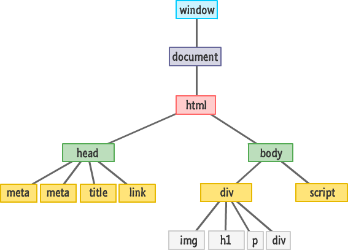

1. Funkcje
Map()
-
Tworzy nową tablicę z wynikami użycia funkcji callback po kolei na każdym elemencie tablicy
array.map(function(currentValue, index, arr), thisValue)
var numbers = [4, 9, 16, 25];
var x = numbers.map(Math.sqrt) // zwraca [2,3,4,5]
Reduce()
- Redukuje tablicę do pojedynczej wartości, wykonując funkcję callback na każdym elemencie oryginalnej
tablicy,
od
lewej do prawej.
array.reduce(function(total, currentValue, currentIndex, arr), initialValue)
const array = [‘J’, ‘U’, ‘S’, ‘T’, ‘J’, ‘O’, ‘I’, ‘N’, ‘.’, ‘I’, ‘T’];
const newText = array.reduce((prev, next) => `${prev}${next}`); // zwraca string “JUSTJOIN.IT”
Filter()
- Tworzy nową tablicę wypełnioną elementami z oryginalnej tablicy które
zdadzą test (z funkcji callback)
array.filter(function(currentValue, index, arr), thisValue)
var ages = [32, 33, 16, 40];
function checkAdult(age) {
return age >= 18;
}
function myFunction() {
document.getElementById("demo").innerHTML = ages.filter(checkAdult);
}
Every()
- Sprawdza czy wszystkie elementy tablicy zdają test z funkcji
callback. Zwraca true lub false
array.every(function(currentValue, index, arr), thisValue)
var ages = [32, 33, 16, 40];
function checkAdult(age) {
return age >= 18;
}
function myFunction() {
document.getElementById("demo").innerHTML = ages.every(checkAdult);
}
Some()
- Sprawdza czy jakikolwiek element tablicy zda test z funkcji callback.
Zwraca true lub false
array.some(function(currentValue, index, arr), thisValue)
var ages = [3, 10, 18, 20];
function checkAdult(age) {
return age >= 18;
}
function myFunction() {
document.getElementById("demo").innerHTML = ages.some(checkAdult);
}
Includes()
- Sprawdza czy tablica zawiera dany element. Zwraca true lub false
array.includes(element, start)
var fruits = ["Banana", "Orange", "Apple", "Mango"];
var n = fruits.includes("Mango"); //zwraca true
Find()
- Zwraca wartość pierwszego elementu z tablicy który zda test z funkcji callback
const array1 = [5, 12, 8, 130, 44];
const found = array1.find(element => element > 10);
console.log(found);
// expected output: 12
Object.keys(wybrany_obiekt)
- Tworzy tablicę składającą się z kluczy wybranego obiektu
const object1 = {
a: 'somestring',
b: 42,
c: false
};
console.log(Object.keys(object1));
// expected output: Array ["a", "b", "c"]
Object.values(wybrany_obiekt)
- Tworzy tablicę skłądającą się z właściwości wybranego obiektu. Podobna do działania pętli for...in
const object1 = {
a: 'somestring',
b: 42,
c: false
};
console.log(Object.values(object1));
// expected output: Array ["somestring", 42, false]
Object.entries(wybrany_obiekt)
- Tworzy tablicę składającą się z par klucz - właściwość, pobranych z wybranego obiektu. Kolejność nie jest
gwarantowana, tablica może wymagać posortowania
const obj = { name: "Adam", age: 20, location: "Nepal" };
console.log(Object.entries(obj)); // [ [ 'name', 'Adam' ], [ 'age', 20 ], [ 'location', 'Nepal' ] ]
const object1 = {
a: 'somestring',
b: 42
};
for (const [key, value] of Object.entries(object1)) {
console.log(`${key}: ${value}`);
}
// expected output:
// "a: somestring"
// "b: 42"
// order is not guaranteed
Metoda bind()
- Metoda bind() zwraca nową funkcję, której wywołanie powoduje ustawienie this na podaną w parametrze wartość
- Pozwala obiektowi pożyczyć metodę innego obiektu bez tworzenia kopii jego metody.
let runner = {
name: 'Runner',
run: function(speed) {
console.log(this.name + ' runs at ' + speed + ' mph.');
}
};
let flyer = {
name: 'Flyer',
fly: function(speed) {
console.log(this.name + ' flies at ' + speed + ' mph.');
}
};
let run = runner.run.bind(flyer, 20);
run(); /// Flyer runs at 20 mph.
setTimeout(fn, time*, arg1*, arg2*...), setInterval(fn, time*, arg1*, arg2*...)
- Funkcja przydatna gdy chcemy wykonać akcję po czasie. Jego wartość jest przybliżona.
function myFunc() {
console.log("Jakiś tekst");
}
setTimeout(myFunc, 1200); //odpali po 1.2s
//funkcja przerywająca
const time = setTimeout(() => {
console.log("Pełne zaskoczenie");
}, 10000);
clearTimeout(time);
//interwał + jego przerwanie, przyjmuje 1 parametr
let i = 0;
const interval = setInterval(() => {
i++;
console.log(i);
if (i >= 10) {
clearInterval(interval);
}
}, 1000);
IIFE
- Immediately-invoked function expression - czyli samo wywołujące się wyrażenie funkcyjne to wzorzec funkcji, która sama się wywołuje.
- Pierwszy () - zawiera funkcję której scope nie jest dostępny z zewnątrz, drugi () powoduje wykonanie funkcji po deklaracji
- Kiedyś używano tego do ograniczania zasięgu zmiennych var
2. Programowanie obiektowe
- Programowanie Obiektowe (ang. object-oriented programming – OOP) to paradygmat programowania, w którym struktura aplikacji oparta jest na obiektach.
- Obiekt to zbiór par klucz (key) - wartość (value). Wartością właściwości może być funkcja, nazywana w tym przypadku metodą. Istnieją obiekty predefiniowane
- W przypadku nazw w obiektach wielkość liter ma znaczenie
- Właściwości z samym kluczem zwracają undefined
- Obiekty możemy podzielić na pojedyncze instancje (pojedyncze egzemplarze), oraz grupy obiektów o podobnych właściwościach (np. tablice, linki, buttony itp).
- Obiekty mogą być rozbudowane, zawierając inne obiekty
- W przeglądarce występuje Global Object("window "), do którego prowadzi this jeśli nie jest przypisane do innego obiektu
- Właściwość __proto__ jest aktualnie rzadko używana, w nowoczesnym Javascript należy używać funkcji Object.getPrototypeOf/Object.setPrototypeOf
- Wartości mogą mieć dowolny typ, klucze muszą być stringami lub symbolami
- Obiekty są przypisywane do zmiennych/kopiowane z użyciem referencji. Czyli zmienna nie zawiera obiektu tylko referencję do miejsca w pamięci gdzie obiekt się znajduje, czyli kopiowanie zmiennej kopiuje referencję a nie sam obiekt.
4 sposoby na utworzenie wzoru obiektu
- Inicjator obiektu (object initializer)
/// Prototyp: Object.prototype - obiekt do którego dostęp ma każdy obiekt w JS
const cat = {
name: "Bill",
speed: 1000,
showText() {
return "Lubię walczyć ze złem";
}
//alternatywna deklaracja funkcji
showText: function() {
return "Lubię walczyć ze złem";
}
}
const mycat = new cat;
function Enemy(speed, power) {
this.live = 3;
this.speed = speed;
this.power = power;
this.print = function() {
console.log(`
Przeciwnik ma:
życia: ${this.live}
szybkości: ${this.speed}
siły ataku: ${this.power}
`);
}
} class Animal {
constructor(name, age) {
this.name = name;
this.age = age;
}
method1() { }
method2() { }
method3() { }
}
const animal = new Animal("pies", 8);
/// Prototyp: obiekt podany w parametrze
const name4 = Object.create(John) Get/Set
- W obiektach możemy zdefiniować gettery i settery poprzedzając klucz słowem get lub set
var o = {
a: 7,
get b() {
return this.a + 1;
},
set c(x) {
this.a = x / 2;
}
};
console.log(o.a); // 7
console.log(o.b); // 8 -- At this point the get b() method is initiated.
o.c = 50; // -- At this point the set c(x) method is initiated
console.log(o.a); // 25Właściwości obiektów
- Odwołać się do właściwości i metod można na 3 sposoby
obiekt.klucz
lub
obiekt["klucz"]
lub
destrukturyzacja// dostęp do wybranej właściwości
cat.speed
// dostęp do metody
car1.displayCar();
// zmiana wartości
myCar.make = 'Ford';
// notacja nawiasowa
myCar['make'] = 'Ford';
// przykład
var myObj = new Object(),
str = 'myString',
rand = Math.random(),
obj = new Object();
myObj.type = 'Dot syntax';
myObj['date created'] = 'String with space';
myObj[str] = 'String value';
myObj[rand] = 'Random Number';
myObj[obj] = 'Object';
myObj[''] = 'Even an empty string';
console.log(myObj);
// usunięcie właściwości z obiektu
delete ob.klucz
// sprawdzenie czy wybrany obiekt to instancja wybranego konstruktora
console.log(enemyS instanceof EnemyShoot); //true
// warunek przy tworzeniu obiektu
if (cond) var x = {greeting: 'hi there'};//definiowanie obiektu razem z jego funkcją
const tab = [];
const name = "Szama";
const speed = 1000;
//zamiast
const ob = {
name: name,
speed: speed
}
tab.push(ob);
//mogę
tab.push({
name: name,
speed: speed
});
//lub jeszcze lepiej
tab.push({name, speed});This
- Aby odwołać się do danego obiektu z wnętrza którejś z jego metod należy użyc słowa kluczowego 'this', które wskazuje na aktualny kontekst
- This w normalnej funkcji wskazuje na obiekt przed kropką
- This w funkcji strzałkowej jest pobierane z normalnej funkcji z zewnątrz
- Jeśli funkcja nie jest metodą żadnego obiektu, to this wskazuje na obiekt globalny. Wyjątek to stric mode
- Czasem metoda w obiekcie może pochodzić z innego obiektu i wtedy this na niego wskazuje. Można sobie z tym poradzić tworząc zmienną np. "const that = this" lub używając metod typu bind()
- Kiedy jest wykonywana odziedziczona metoda, wartość this wskazuje na obiekt, który dziedziczy, nie na obiekt w którym ta metoda została zadeklarowana jako własna właściwość
- This wewnątrz funkcji setTimeout traci połączenie ze swoim obiektem, bo this tej funkcji jest ustawiony na global object lub undefined(strict mode). Można tu użyć funkcji .bind()
Kopiowanie obiektów
- Jeśli używamy funkcji które wykonują na obiektach różne czynności to może dojść do nadpisania wartości. Dlatego warto kopiować obiekty
- Płaskie obiekty można kopiować używając spread syntax lub funkcji Object.assign (cel, ...źródła)
const John = {
name: 'John',
skill: {level: 4}
}
/// Skopiowanie referencji
const name1 = John
/// Spread syntax
const name2 = {...John}
/// Object.assign(target, source) - zwraca zmodyfikowany obiekt zrodlowy
const name3 = Object.assign({}, John)
/// Object.create(source) - tworzy nowy obiekt, którego prototypem jest obiekt podany w parametrze
const name4 = Object.create(John)
/// JSON - głębokie klonowanie, bez funkcji
const name5 = JSON.parse(JSON.stringify(Jon))
Konstruktor
- Konstruktor to zwykła funkcja (z wyjątkiem funkcji strzałkowej) która tworzy wzór obiektu. Jej nazwę piszemy wielką literą
- Używamy go tylko z użyciem operatora "new"
- Domyślnie wszystkie funkcje (w tym konstruktor) mają w prototypie właściwość constructor która prowadzi do niej samej - Name.prototype = { constructor: Name }. Dotyczy to też obiektów stworzonych pozniej za pomocą "new"
function Enemy(speed, power) {
this.live = 3;
this.speed = speed;
this.power = power;
this.print = function() {
console.log(`
Przeciwnik ma:
życia: ${this.live}
szybkości: ${this.speed}
siły ataku: ${this.power}
`);
}
}
/// Teraz uzywamy konstruktora
function Enemy(speed, power) { ... }
const enemy1 = new Enemy(3, 10);
enemy1.print();
const enemy2 = new Enemy(5, 15);
enemy2.print();
// Podobnie do innych typów
const str = new String("Ala ma Konczenti");
const nr = new Number(102);
const arr = new Array(1, 2, 3);
const bool = new Boolean(true);
Prototyp i dziedziczenie
- Każdy obiekt posiada prywatną własność łączącą go z innym obiektem zwanym jego prototypem. Obiekt prototype posiada swój własny prototyp, i tak dalej aż do Object.prototype, którego prototyp ma wartość null i jest zakończeniem łańcucha prototypów.
- Podczas wywołania metody obiektu najpierw sprawdzane jest, czy znajduje się ona bezpośrednio na obiekcie, a jeśli nie ma to szukana jest na prototypie obiektu, prototypie jego prototypu i tak dalej, aż do odnalezienia właściwości o pasującej nazwie bądź końca łańcucha prototypów. Obiekt otrzymuje metody i właściwości z prototypu. Proces ten to dziedziczenie prototypowe
- W Javascript nie występuje klasyczny (classical) model dziedziczenia, w którym klasa to abstrakcja (poziom 2) obiektu(poziom 1), a obiekt to abstrakcja Real World Entity (poziom 0).
- W prototypowym modelu dziedziczenia występuje tylko jeden typ abstrakcji - obiekt. W Javascript obiekty są abstrakcjami Real World Entitites lub innych obiektów, które nazywane są wtedy prototypami.
- Klasa w modelu prototypowym sama w sobie jest i abstrakcją i obiektem
- Tablice dziedziczą z Array.prototype i Object.prototype: a ---> Array.prototype ---> Object.prototype ---> null
- __proto__ to historyczny getter/setter dla właściwości Prototype. Aktualnie częściej używa się funkcji Object.getPrototypeOf/Object.setPrototypeOf
- Prototyp zawiera wszystkie właściwości i metody, które chcemy aby zostały odziedziczone przez wszystkie nowo tworzone instancje
- Prototyp używany jest tylko do odczytywania właściwości, tzn. wszystkie operacje modyfikujące działają tylko na danym obiekcie a nie na jego prototypie
- Niezależnie od umiejscowienia metody/właściwości, This zawsze wskazuje na obiekt przed kropką, a nie na prototyp z którego pochodzi.
- Pętla for...in iteruje też po odziedziczonych wartościach. Jeśli chcemy tego uniknąć, możemy użyc w kodzie funkcji obj.hasOwnProperty(key
- Zagłębianie się w kolejnej prototypy w celu wyszukania wywołanej metody (lub wlasciwosci) nazywane jest korzystaniem z łańcucha prototypów
- Wszystkie obiekty w Javascript mają dostęp do prototypu Object.prototype, który jest na samej górze każdego łańcucha prototypów.
- Typowa funkcja obiekt ma poza prototypem kilka właściwości, które zostały automatycznie dodane przez Javascript. Są to między innymi name (nazwa funkcji), arguments (przekazane wartości), caller (funkcja, która wywołała aktualną funkcję).
- Tablice dziedziczą z Object.prototype i Array.prototype
- Prototyp jest obiektem, więc możemy go rozbudować tak samo jak to robiliśmy z innymi obiektami do tej pory. Jeżeli kiedykolwiek coś do niego dodamy stanie się to dostępne dla wszystkich instancji już stworzonych i tworzonych w przyszłości na bazie tego konstruktora.

/// Funkcja tworząca pusty obiekt z podanym prototypem, plus property descriptor opcjonalnie
Object.create(proto, [descriptors])
/// Zwraca prototyp obiektu, działa jak __proto__ getter
Object.getPrototypeOf(obj)
/// Ustawia prototyp obiektu, działa jak __proto__ setter
Object.setPrototypeOf(obj.proto)
/// Inne przykłady
function Enemy(speed, power) {
this.live = 3;
this.speed = speed;
this.power = power;
}
/// Dodajemy nowe metody do prototypu
Enemy.prototype.attack = function() {
console.log(`Atakuje z siłą ${this.power} i szybkością ${this.speed}`);
}
Enemy.prototype.fly = function() {
console.log(`Lecę z szybkością ${this.speed}`);
}
/// Tworzę nowe obiekty
const enemy1 = new Enemy(3, 10);
enemy1.attack(); //Atakuje z siłą 10
enemy1.fly(); //Lecę z szybkością 3
const enemy2 = new Enemy(5, 15);
enemy2.attack(); //Atakuje z siłą 15
enemy2.fly(); //Lecę z szybkością 5
Object.create()
- Funkcja która tworzy nowy obiekt. Jako pierwszy parametr przyjmuje ona obiekt, który stanie się prototypem nowo tworzonego obiektu, czyli kopiowane są wszystkie właściwości obiektu
const car = {
drive() {
console.log(this.name + " jadę");
},
refuel() {
console.log(this.name + " tankuję");
},
stop() {
console.log(this.name + " zatrzymuję się");
}
}
const c1 = Object.create(car);
c1.name = "Samochód 1";
c1.drive(); //Samochód 1 jadę
const c2 = Object.create(car);
c2.name = "Samochód 2";
c2.drive(); //Samochód 2 jadę
console.log(c1);
console.log(c2);
const c1 = Object.create(car, {
name: {
value: 'Maluch'
},
km: {
value: 0
}
}
Object.assign()
- Funkcja kopiująca wszystkie iterowalne właściwości z źródłowego obiektu do docelowegu obiektu. Zwraca zmodyfikowany docelowy obiekt
Object.assign(target, ...sources)
const target = { a: 1, b: 2 };
const source = { b: 4, c: 5 };
const returnedTarget = Object.assign(target, source);
console.log(target);
// expected output: Object { a: 1, b: 4, c: 5 }
console.log(returnedTarget);
// expected output: Object { a: 1, b: 4, c: 5 }
Klasy
- W OOP klasa to kod który jest wzorem dla tworzenia obiektów, dostarczającym początkowe wartości zmiennych i implementującym metody
- Klasy to nowy sposób zapisu opartego o prototypowy model dziedziczenia. Nie zmienia starego mechanizmu, jest tylko przyjemniejszym zapisem tego samego
- Klasa w modelu prototypowym sama w sobie jest i abstrakcją i obiektem
- Klasa ES6 to w zasadzie funkcja
- Słowa kluczowe składni klas:
- Class - deklaracja klasy z daną nazwą
- Constructor - specjalna metoda tworzenia i inicjowania obiektu utworzonego w klasie
- Static - definiuje statyczną metodę lub właściwość klasy. Przydatne np. do stałych konfiguracji lub innych właściwości, które nie muszą być powielane w instancjach
- Extends - używane do tworzenia klasy jako elementu potomnego innej klasy
- Super - umożliwia korzystanie z funkcji klasy po której nasz obiekt dziedziczy.
- Każda klasa ma funkcję constructor() która jest wykonywana przy tworzeniu nowej instancji za pomocą new
- Kod klasy jest automatycznie w strict mode
- Użycie "#" przed nazwą zmiennej lub metody w klasie sprawia że będzie ona prywatna, dostępna tylko dla kodu wewnątrz tej klasy. Możemy wtedy ustawić np. gettery i settery, a nie możemy modyfikować prywatnej treści kodem z zewnątrz
- Metody klasy są nie iterowalne, dzięki czemu możemy loopować np. for...in po właściwościach obiektu
class MyClass {
constructor(name, age) {
this.name = name;
this.age = age;
}
method1() { }
method2() { }
method3() { }
}
const animal = new Animal("pies", 8);
/// Właściwości można też definiować poza konstruktorem
class Animal {
legs = 4;
type = "animal";
}
/// Klasę można też zdefiniować wewnątrz zmiennej
let User = class {
sayHi() {
alert("Hello");
}
};
class Human {
constructor(name) {
this.name = name;
}
say() {
console.log("Jestem człowiek");
}
static create() {
console.log("Tworzę");
}
}
const ob = new Human("Marcin");
ob.create(); //błąd
Human.create(); //"Tworzę"
Konstruktor - dziedziczenie
- Jeśli chcielibyśmy aby obiekt otrzymał metody innego obiektu moglibyśmy użyć kodu 'Obiekt1.prototype = Obiekt2.prototype;' ale wtedy stają się tym samym obiektem i metoda dodana do jednego obiektu trafia do wszystkich obiektów korzystających z tego prototypu.
- Rozwiązaniem nie jest równanie prototypów, a stworzenie nowego obiektu na bazie innego prototypu.
EnemyShoot.prototype = Object.create(Enemy.prototype);
//lub
EnemyShoot.prototype = Object.assign({}, Enemy.prototype);
//lub
EnemyShoot.prototype = Object.create(...Enemy.prototype);
function Enemy(name, x, y) {
this.name = name;
this.x = x;
this.y = y;
console.log("Tworzę przeciwnika: " + this.name);
}
Enemy.prototype.fly = function() {
return this.name + " latam";
}
//dziedziczymy prototyp
function EnemyShoot(name, x, y) {
this.name = name;
this.x = x;
this.y = y;
this.type = "shooter";
}
EnemyShoot.prototype = Object.create(Enemy.prototype);
EnemyShoot.prototype.constructor = EnemyShoot;
EnemyShoot.prototype.shoot = function() {
return this.name + " strzelam";
}
const enemyN = new Enemy("Normal");
console.log(enemyN.fly()); //Normalny latam
console.log(enemyN.shoot()); //błąd - nie ma takiej metody
const enemyS = new EnemyShoot("Shooter");
console.log(enemyS.fly()); //Shooter latam
console.log(enemyS.shoot()); //Shooter strzelam
Metoda call() i apply()
- Pozwala obiektowi zapożyczyć metodę z innego obiektu. Jako pierwszy parametr podajemy obiekt którego ma dotyczyć this. Kolejne parametry to wskazane przez nas parametry.
- Jesli wiemy że funkcja nie obsługuje this to pierwszy parametr nie jest obslugiwany, mozemy wpisac null albo undefined.
const ob = {
name : "x-wing",
print(shotCount, speed) {
console.log(`${this.name} strzela ${shotCount} razy z szybkością ${speed}`);
}
}
const tie = {
name : "Tie fighter"
}
ob.print.call(tie, 5, 200); //Tie fighter strzela 5 razy z szybkością 200
const ob = {
name : "nikt",
print(pet1, pet2) {
console.log(`Nazywam się ${this.name} i mam 2 zwierzaki: ${pet1} i ${pet2}`);
}
}
const user = {
name : "Marcin"
}
ob.print.apply(user, ["pies", "kot"]); //Nazywam się Marcin i mam dwa zwierzaki: pies i kot
function EnemyShoot(name, x, y) {
Enemy.call(this, name, x, y);
this.type = "shooter";
}
EnemyShoot.prototype = Object.create(Enemy.prototype);
EnemyShoot.prototype.constructor = EnemyShoot;
EnemyShoot.prototype.fly = function() {
const text = Enemy.prototype.fly.call(this); //tamta funkcja nie ma parametrów
return text + " i czasami strzelam!!!";
}
const enemyN = new Enemy("Normal");
enemyN.fly(); //Normal latam
const enemyS = new EnemyShoot("Shooter");
console.log(enemyS.fly()); //Shooter latam i czasami strzelam!!!
Klasy - dziedziczenie
- Aby rozszerzyć jakąś klasę, a tym samym dziedziczyć po niej jej funkcjonalności, skorzystamy z instrukcji extends
- Instrukcja super() służy do wywołania kodu rozszerzanej metody
import React from "react";
class Clock extends React.Component {
constructor(props) {
super(props);
this.state = {date: new Date()};
}
render() {
return (
Hello, world!
It is {this.state.date.toLocaleTimeString()}.
);
}
}
class MyArray extends Array {
constructor(...param) {
super(...param);
}
sortNr() {
return this.sort((a, b) => a - b);
}
}
const tab1 = new Array(4, 5, 20, 21, 2.1, 1.2, 3);
tab1.sortNr(); //błąd : nie ma takiej metody
const tab2 = new MyArray(4, 5, 20, 21, 2.1, 1.2, 3);
tab2.sortNr();
console.log(tab2); //[1.2, 2.1, 3, 4, 5, 20, 21]
Hermetyzacja kodu
- Polega na odpowiednim ukrywaniu pewnych metod i właściwości naszego obiektu przed zewnętrznym środowiskiem
- W większości skryptów nie jest wymagane sięganie po omawiane tutaj rozwiązania. To, że takie rzeczy da się stosować, wcale nie oznacza, że musisz to robić za każdym razem. W Javascript w większości przypadków spokojnie wystarcza stosowanie zakresów (funkcji, bloków) oraz umiejętne dzielenie kodu na moduły.
- Jednym z dość często stosowanych rozwiązań jest zastosowanie konwencji poprzedzania prywatnych składowych znakiem podłogi. Konwencja ta nie zabezpiecza nam kodu, a tylko daje wskazówkę dla innych programistów, że danej składowej nie powinno się ruszać spoza obiektu.
const my = new SimpleClass();
//tego nie powinienem
my._privateMethod();
my._privateNumber = "ala ma kota";
//to mogę
my.publicMethod();
my.publicNumber = "ala ma kota";
function makeObj() {
let _name = "";
let _counter = 0;
return {
set name(newName) {
_name = newName;
},
get name() {
return _name;
},
set counter(nr) {
_counter = nr;
},
get counter(){
return _counter;
}
}
}
const ob = makeObj();
console.log(ob._counter); //undefined
ob.counter = 20;
console.log(ob.counter); //20
ob._name = "Piotr";
ob.name = "Karol";
console.log(ob.name); //"Karol"
3. Map & Set
Map()
- Map i Set to dwie struktury danych, które są czymś pomiędzy tablicami i klasycznymi obiektami.
- Mapy służą do tworzenia zbiorów z parami [klucz - wartość]. Kluczami może być tutaj dowolny typ danych, gdzie w przypadku obiektów i tablic są one konwertowane na tekst
const map = new Map();
map.set("kolor1", "red");
map.set("kolor2", "blue");
//lub
const map = new Map([
["kolor1", "red"],
["kolor2", "blue"],
]);
const map = new Map();
map.set("kolor1", "red");
map.set("kolor2", "blue");
map.set("kolor3", "yellow");
console.log(map.get("kolor1")); //red
console.log(map.delete("kolor2"));
console.log(map.keys()); //MapIterator {"kolor1", "kolor3"}
const map = new Map([
["kolor1", "red"],
["kolor2", "blue"],
["kolor3", "yellow"]
]);
for (const key of map.keys()) {
//kolor1, kolor2, kolor3
}
for (const key of map.values()) {
//red, blue, yellow
}
for (const entry of map.entries()) {
//["kolo1", "red"]...
}
for (const [key, value] of map.entries()) {
//key : "kolo1", value : "red"...
}
for (const entry of map) {
//["kolor1", "red"]...
}
///////
const map = new Map([
["kolor1", "red"],
["kolor2", "blue"],
["kolor3", "yellow"]
]);
map.forEach((value, key, map) => {
console.log(`
Wartość: ${value}
Klucz: ${key}
`);
});
Set()
- Obiekt Set jest kolekcją składającą się z unikalnych wartości, gdzie każda wartość może być zarówno typu prostego jak i złożonego. W przeciwieństwie do mapy jest to zbiór pojedynczych wartości.
const set = new Set();
set.add(1);
set.add("text");
set.add({name: "kot"});
console.log(set); //{1, "text", {name : "kot"}}
//lub
//const set = new Set(elementIterowalny);
const set = new Set([1, 1, 2, 2, 3, 4]); //{1, 2, 3, 4}
const set = new Set("kajak"); //{"k", "a", "j"}
//metody
const mySet = new Set();
mySet.add(1);
mySet.add(5);
mySet.add(5);
mySet.add("text"); //Set { 1, 5, "text"}
mySet.has(5); // true
mySet.delete(5); //Set {1, "text"}
console.log(mySet.size); //2
const tab = [1, 1, 1, 2, 2, 2, 3, 3, 3, 4, 5, 5];
const set = new Set(tab);
console.log(set); //{1, 2, 3, 4, 5}
const uniqueTab = [...set];
console.log(uniqueTab); //[1, 2, 3, 4, 5]
WeakMap() i WeakSet()
- WeakMap() to odmiana Mapy, różniąca się od niej tym że nie można po niej iterować, kluczami mogą być tylko obiekty, a jej elementy są automatycznie usuwane gdy do obiektu(klucza) nie ma referencji
- Podobnie jak dla Map istnieją WeakMap, tak dla Setów istnieją WeakSet. Są to kolekcje składające się z unikalnych obiektów. Podobnie do WeakMap obiekty takie będą automatycznie usuwane z WeakSet, jeżeli do danego obiektu zostaną usunięte wszystkie referencje.
4. Document Object Model
- Do odzwierciedlenia struktury elementów na stronie Javascript (ale też niektóre inne języki) korzysta z DOM czyli Document Object Model. Model ten opisuje jak zaprezentować tekstowe dokumenty HTML w postaci modelu obiektowego w pamięci komputera. Przeglądarka wiec czyta kod naszej strony, parsuje go a następnie podaje nam zbudowane na jego podstawie drzewo DOM. 
- Dostęp do elementów DOM
document.getElementById('someid');
document.getElementsByClassName('someclass');
document.getElementsByTagName('LI');
document.querySelector('ul li'); // pierwszy pasujący element
document.querySelectorAll('div.note, div.alert'); // kolekcja elementów
const p = document.querySelector("p");
// pobierające elementy html
p.parentElement //wskazuje na nadrzędny element - div.text-cnt
p.firstElementChild //pierwszy element w #text
p.lastElementChild //ostatni element w #text
p.children //[strong, span] - kolekcja dzieci elementu #text
p.children[0] //wskazuje na 1 element - Ala
p.nextElementSibling //następny brat-element
p.previousElementSibling //poprzedni brat-element
// pobierające węzły
p.parentNode //wskazuje na nadrzędny węzeł - div.text-cnt
p.firstChild //pierwszy node - w naszym przypadku to tekst "Mała "
p.lastChild //ostatni node - "" - html jest sformatowany, wiec ostatnim nodem jest znak nowej linii
p.childNodes //[text, strong, text] - kolekcja wszystkich dzieci - nodów
p.childNodes[0] //"Mała"
p.nextSibling //następny węzeł
p.previousSibling //poprzedni węzeł
//metoda element.closest("selektor") odnajduje najbliższy element w górę drzewa
const btn = document.querySelector(".button")
btn.addEventListener("click", e => {
const module = btn.parentElement.parentElement.parentElement;
// lub
const module = btn.closest(".module");
});
document.body //element body
document.all //kolekcja ze wszystkimi elementami na stronie
document.forms //kolekcja z formularzami na stronie
document.images //kolekcja z grafikami img na stronie
document.links //kolekcja z linkami na stronie
document.anchors //kolekcja z linkami będącymi kotwicami // create new elments
var newHeading = document.createElement('h1');
var newParagraph = document.createElement('p');
// create text nodes for new elements
var h1Text= document.createTextNode('This is a nice header text!');
var pText= document.createTextNode('This is a nice paragraph text!');
//Klonowanie
const cloneEl1 = el.cloneNode();
// grab element on page you want to add stuff to
var firstHeading = document.getElementById('firstHeading');
// wstawia element na koniec wybranego elementu
firstHeading.appendChild(newHeading);
firstHeading.appendChild(newParagraph);
// can also insert before like so
// get parent node of firstHeading
var parent = firstHeading.parentNode;
// insert newHeading before FirstHeading
parent.insertBefore(newHeading, firstHeading);
const div = document.querySelector("div")
const el = div.querySelector("span");
const btn = document.querySelector("button");
btn.addEventListener("click", e => {
parent.removeChild(el);
//lub
el.parentElement.removeChild(el);
//lub najprościej
el.remove();
}); el.classList.add("btn");
el.classList.add("btn", "btn-primary");
el.classList.remove("btn");
el.classList.toggle("btn");
el.classList.contains("btn");
el.classList.replace("old", "new"); const element = document.querySelector("div");
element.style.color = "red"; //ustawiam kolor tekstu na czerwony
const btn = document.querySelector(".btn");
console.log(btn.innerHTML); // odczyt html
console.log(btn.innerText); /// tekst ze stylami
console.log(btn.textContent); // tekst oryginalny z pliku html, z wcięciami itp.
//tagName - nazwa elementu
const elements = document.querySelectorAll("body *");
for (const el of elements) {
if (el.tagName === "STRONG") {
el.style.border = "1px solid red";
}
}
//kilka wartosci naraz
el.style.cssText = `
color: red;
background: blue;
padding: 10px;
`;
//pobranie CSS - poza inline mozemy pobrac tylko computed tzn. to co juz w przeglądarce
window.getComputedStyle(elem, pseudoElement*). el.style.setProperty("--size", "1em");
el.style.getPropertyValue("--size"); //"1em" Pętle w DOM
- Pętla po kolekcji
const elements = document.querySelectorAll(".module");
elements[0].style.color = "red"; //ok bo pierwszy element w kolekcji
//ok, bo robimy pętlę
for (const el of elements) {
el.style.color = "red";
}
const buttons = document.querySelectorAll("button");
[...buttons].map(el => el.style.color = "red");
const elements = document.querySelectorAll(".module");
elements.forEach(el => {
el.style.color = "blue"
});Obsługa zdarzeń
- Event bubbling - gdy ma miejsce event na elemencie, wywoływany jest jego handler, potem handler jego rodzica, a potem kolejnych rodziców aż do góry DOM
- Gdy event handler jest na rodzicu, najgłębiej zagnieżdżony kliknięty element powodujący event to 'target', do którego dostęp zapewnia 'event.target'
- 'Event.target' to element który wywołał event, a 'this' to w tym przypadku element do którego dołączony jest handler. Czyli this i event.target są równoważne przy kliknięciu w samego rodzica
- Event bubbling możemy zatrzymać funkcją.stopPropagation()
- Gdy klikniemy zagnieżdżony element, przed fazą bubblingu następuje faza event capturing. Normalnie jest dla nas niewidzialna, rzadko używana. Możemy jej użyc dodając 'true' jako parametr w addEventListener
- Event delegation - użycie event.target w handlerze rodzica, w celu wykrycia elementu zagnieżdżonego bez potrzeby dołączania handlerów do wszystkich dzieci
element.addEventListener('nameOfEvent', functionToRun);
element.removeEventListener('nameOfEvent', functionToStopRunning);
e.preventDefault() // zapobieganie domyślnej akcji
console.log("e.target: ", e.target); // e.target wskazuje element na którym zdarzenie się wydarzyło (nastapiła faza target)
console.log("e.currentTarget: ", e.currentTarget, parent); // wskazuje na element do którego podpięliśmy funkcję nasłuchującą
Praca z atrybutami HTMLa
dataset
- Własne atrybuty możemy obsługiwać za pomocą powyższych metod, ale możemy dla nich skorzystać z właściwości dataset. Jest to obiekt, którego kolejne właściwości są budowane na bazie niestandardowych atrybutów
- Przy podawaniu nazwy danego atrybutu pomijamy początek data-, a myślniki w nazwie zamieniamy na zapis camelCase.
5. Formularze i walidacja
- Przykładowy formularz
//właściwości
form.elements - kolekcja wszystkich elementów formularza
form.action - atrybut action formularza, czyli adres na który formularz zostanie wysłany
form.method - metoda jaką zostanie wysłany formularz (omawiana w dziale Ajax)
//metody
form.submit(); //funkcja wysyłająca formularz
form.reset(); //funkcja resetująca formularz
const form = document.querySelector("#myForm");
const genderRadio = form.querySelectorAll("input[name=gender]");
const resultElement = document.querySelector("#genderResult");
for (const radio of genderRadio) {
radio.addEventListener("change", e => {
for (const radio of genderRadio) {
if (radio.checked) {
resultElement.innerText = radio.nextSibling.data; //pobieram tekst leżący obok radio
break;
}
}
});
}
select.value //wartość pola
select.options //kolekcja elementów option
select.selectedIndex //indeks wybranego optiona
select.options[selectedIndex] - zaznaczony option
Walidacja formularzy
- Walidację można przeprowadzać 1) Po stronie HTML 2) W czasie wprowadzania danych przez użytkownika, z wykorzystaniem zdarzeń typu change/focus/keypress itd, 3) Tuż przed wysłaniem 4) Po stronie serwera
- Walidacja po stronie HTML
- Aby wykonać walidację przed wysłaniem danych podpinamy się pod zdarzenie submit i używamy preventDefault()
- Gdy pojawi się w naszym formularzu kilka pól, trzeba jakoś zebrać wyniki. Rozwiązań jest wiele. Jednym z nich jest ręczne sprawdzanie kolejnych pól, gdzie wyniki testów możemy trzymać w oddzielnej tablicy.
- Skrypt walidujący formularz w trakcie wpisywania i przed wysłaniem, wraz z wyświetleniem listy błędów
function testText(field, lng) {
return field.value.length >= lng;
}
function testEmail(field) {
const reg = /^([^\x00-\x20\x22\x28\x29\x2c\x2e\x3a-\x3c\x3e\x40\x5b-\x5d\x7f-\xff]+|\x22([^\x0d\x22\x5c\x80-\xff]|\x5c[\x00-\x7f])*\x22)(\x2e([^\x00-\x20\x22\x28\x29\x2c\x2e\x3a-\x3c\x3e\x40\x5b-\x5d\x7f-\xff]+|\x22([^\x0d\x22\x5c\x80-\xff]|\x5c[\x00-\x7f])*\x22))*\x40([^\x00-\x20\x22\x28\x29\x2c\x2e\x3a-\x3c\x3e\x40\x5b-\x5d\x7f-\xff]+|\x5b([^\x0d\x5b-\x5d\x80-\xff]|\x5c[\x00-\x7f])*\x5d)(\x2e([^\x00-\x20\x22\x28\x29\x2c\x2e\x3a-\x3c\x3e\x40\x5b-\x5d\x7f-\xff]+|\x5b([^\x0d\x5b-\x5d\x80-\xff]|\x5c[\x00-\x7f])*\x5d))*(\.\w{2,})+$/;
return reg.test(field.value);
};
function markFieldAsError(field, show) {
if (show) {
field.classList.add("field-error");
} else {
field.classList.remove("field-error");
}
};
//------------------------
//pobieram elementy
//------------------------
const form = document.querySelector("form");
const inputName = form.querySelector("input[name=name]");
const inputEmail = form.querySelector("input[name=email]");
const formMessage = form.querySelector(".form-message");
//------------------------
//etap 1 : podpinam eventy
//------------------------
inputName.addEventListener("input", e => markFieldAsError(e.target, !testText(e.target)));
inputEmail.addEventListener("input", e => markFieldAsError(e.target, !testEmail(e.target)));
form.addEventListener("submit", e => {
e.preventDefault();
let formErrors = [];
//------------------------
//2 etap - sprawdzamy poszczególne pola gdy ktoś chce wysłać formularz
//------------------------
//chowam błędy
for (const el of [inputName, inputEmail]) {
markErrorField(el, false);
}
//i testuję w razie czego zaznaczając pola
if (!testText(inputName, 3)) {
markFieldAsError(inputName, true);
formErrors.push("Wypełnij poprawnie pole z imieniem");
}
if (!testEmail(inputEmail)) {
markFieldAsError(inputEmail, true);
formErrors.push("Wypełnij poprawnie pole z emailem");
}
if (!formErrors.length) { //jeżeli nie ma błędów wysyłamy formularz
form.submit();
//...lub dynamicznie wysyłamy dane za pomocą Ajax
//równocześnie reagując na odpowiedź z serwera
} else {
//jeżeli jednak są jakieś błędy...
formMessage.innerHTML = `
Przed wysłaniem formularza proszę poprawić błędy:
${formErrors.map(el => `- ${el}
`).join("")}
`;
}
});
6. AJAX
- AJAX czyli Asynchronous JavaScript and XML to technika, wzorzec, który umożliwia nam dynamiczne ściąganie i wysyłanie danych bez potrzeby przeładowania całej strony.
- Żądanie trafia na serwer DNS który kieruje ruch na odpowiedni numer IP. Po dotarciu do serwera, ten analizuje zapytanie i zwraca odpowiedź
- Odpowiedź składa się z 1) statusu odpowiedzi 2) 0 lub więcej nagłówków 3) ciała odpowiedzi - body
- Status odpowiedzi to oznaczenie, czy dane połączenie zakończyło się sukcesem. Na obrazku poniżej wypisano najczęściej spotykane statusy
- Nagłówek content/type, określa typ MIME danych. Jest to rodzaj danego pliku czy dokumentu. Dla przykładu dokument HTML ma typ text/html, filmy mp4 mają typ video/mp4, a pliki dźwiękowe WAV mają audio/x-wav.
JSON
- JSON to sposób na przechowywanie i przekazywanie danych za pomocą zapisu obiektowego składni Javascriptu.
- Obiekt ten udostepnia nam 2 metody
- Stringify() zamienia dany obiekt na format JSON. Parse() zamienia zakodowany wcześniej tekst na obiekt Javascript
- JSON nie jest w stanie przechowywać funkcji więc je wycina
Fetch API
- Nowy interfejs, a także następca XMLHttpRequest, który podobnie do swego brata pozwala pracować z dynamicznymi połączeniami
- Zwraca obietnicę, którą możemy skonsumować metodami then()/catch() lub async/await
- Stringify() zamienia dany obiekt na format JSON. Parse() zamienia zakodowany wcześniej tekst na obiekt Javascript
fetch("https://restcountries.eu/rest/v2/name-anka-kaszanka/Poland")
.then(res => {
if (res.ok) {
return res.json()
} else {
return Promise.reject(`Http error: ${res.status}`);
//lub rzucając błąd
//throw new Error(`Http error: ${res.status}`);
}
})
.then(res => {
console.log(res)
})
.catch(error => {
console.error(error)
});
try {
const res = await fetch("https://restcountries.eu/rest/v2/name-anka-kaszanka/Poland")
if (!res.ok) {
throw new Error(`Http error: ${res.status}`);
}
const json = await res.json();
console.log(json);
} catch (error) {
console.error(error);
}
fetch("...", {
method: 'POST', //*GET, POST, PUT, DELETE, etc.
mode: 'cors', //no-cors, *cors, same-origin
cache: 'no-cache', //*default, no-cache, reload, force-cache, only-if-cached
credentials: 'same-origin', //include, *same-origin, omit
headers: {
'Content-Type': 'application/json'
//'Content-Type': 'application/x-www-form-urlencoded',
},
redirect: 'follow', // manual, *follow, error
referrerPolicy: 'no-referrer', // no-referrer, *client
body: JSON.stringify(data) //treść wysyłana
})
const ob = {
name : "Piotrek",
age : 10,
pet : {
type : "ultra dog",
speed: 1000,
power : 9001
}
}
fetch("...", {
method: "post",
headers: {
"Content-Type": "application/json"
},
body: JSON.stringify(ob)
})
.then(res => res.json())
.then(res => {
console.log("Dodałem użytkownika:");
console.log(res);
})
const getSuggestions = async () => {
const wordQuery = inputField.value;
const endpoint = `${url}${queryParams}${wordQuery}`;
try{
const response = __~await~__ __~fetch(endpoint, {cache: 'no-cache'});
if(response.ok){
const jsonResponse = await response.json()
}
}
catch(error){
console.log(error)
}
}
7. Asynchroniczność
- Standardowo kod wykonuje się synchronicznie tzn. linia po linii, jednowątkowo. Oznacza to, że w danym momencie może wykonywać tylko jeden kod, a dopóki go nie wykona, nie jest w stanie wykonać nic innego.
- W Javascript występują asynchroniczne funkcje, jak setTimeout(), fetch() lub addEventlistener(). Pochodzą z globalnego obiektu window z API przeglądarki
- Asynchroniczny kod może być wykonywany równolegle do reszty aplikacji nie przeszkadzając jej w działaniu, ale też rezultat działania nie jest natychmiastowy.
- Asynchroniczność powstała żeby strona nie była zamrożona gdy node czeka na wykonanie jakiejś funkcji
- Jeśli wykonujemy funkcję, trafia on na stos (call stack). Kolejne funkcje w niej zawarte podwyższają stos. Potem wykonywany jest kod od góry stosu, czyli od najgłębszej funkcji.
- Jeśli funkcja jest asynchroniczna to trafia do przeglądarki (Web API) która przejmuje oczekiwanie na ich wykonanie. Gdy tam się załaduje to trafia do kolejki zdarzeń (event loop)
- Event loop cały czas "krąży" i sprawdza czy stos jest pusty. Nie może na niego nic wrzucić tylko czeka. Czyli w praktyce asynchroniczne funkcje robią się na końcu
Callbacks - funkcje zwrotne
- Callback to funkcja przekazana jako argument (bez nawiasow) do innej funkcji. Najczęściej używana w przypadku funkcji asynchronicznych
- Nie każdy callback jest asynchroniczny, czyli sam callback nie wystarczy zeby funkcja była asynchroniczna. Np. forEach jest synchroniczne
- Żeby callback był asynchroniczny musi wykonywać asynchroniczną operację. Np. setTimeout/setInterval/korzystanie z API/nasłuchiwanie eventu/operacje na plikach
function myDisplayer(some) {
document.getElementById("demo").innerHTML = some;
}
function myCalculator(num1, num2, myCallback) {
let sum = num1 + num2;
myCallback(sum);
}
myCalculator(5, 5, myDisplayer);
function myDisplayer(some) {
document.getElementById("demo").innerHTML = some;
}
function getFile(myCallback) {
let req = new XMLHttpRequest();
req.open('GET', "mycar.html");
req.onload = function() {
if (req.status == 200) {
myCallback(this.responseText);
} else {
myCallback("Error: " + req.status);
}
}
req.send();
}
getFile(myDisplayer);
Promise - obietnice
- Obietnice to obiekty które wyznaczają możliwy wynik asynchronicznej operacji.
- Może być w 1 z 3 stanów: pending, resolved/fullfilled lub rejected
- Dzięki nim możemy wykonać jakiś kod, a następnie odpowiednio zareagować na jego wykonanie. Można powiedzieć, żę to taka inna odmiana funkcji callback.
- Praca z obietnicami w zasadzie zawsze składa się z 2 kroków. Po pierwsze za pomocą konstruktora Promise tworzymy obietnicę. Po drugie za pomocą odpowiedniej funkcji reagujemy na jej zakończenie (konsumujemy ją)
- Resolve() i reject() to funkcje podawane jako parametr do funkcji wykonawczej. Resolve zmienia status obietnicy z pending na fullfilled
let myPromise = new Promise(function(myResolve, myReject) {
// "Producing Code" (May take some time)
myResolve(); // when successful
myReject(); // when error
});
// "Consuming Code" (Must wait for a fulfilled Promise)
myPromise.then(
function(value) { /* code if successful */ },
function(error) { /* code if some error */ }
);
//
const promise = new Promise((resolve, reject) => {
if (zakończono_pozytywnie) {
resolve("Wszystko ok 😁");
} else {
reject("Nie jest ok 😥");
}
});
function doSomething() {
return new Promise((resolve, reject) => {
setTimeout(() => {
//resolve("Gotowe dane");
reject("Przykładowy błąd"); //uwaga zwracamy błąd
}, 1000);
});
}
doSomething()
.then(result => {
...
})
.catch(error => {
console.error(error);
});
Promise.all([
loadUser(),
loadBooks(),
loadPets(),
])
.then(res => {
console.log(res);
})
.catch(err => {
console.log(err);
})
button.classList.add("loading"); //pokazujemy loading
button.disabled = true; //i wyłączamy button
fetch("....")
.then(res => res.json())
.then(res => console.log(res))
.catch(err => console.log(err))
.finally(() => {
button.classList.remove("loading");
button.disabled = false;
});
Async i Await
- Używamy ich jako zamiennik konsumowania promisu przy pomocy .then
- Słowo async postawione przed dowolną funkcją tworzy z niej funkcję asynchroniczną, która zwraca obietnicę
- Słowo kluczowe await sprawia, że JavaScript poczeka na wykonanie asynchronicznego kodu. Dzięki temu zapis bardzo przypomina synchroniczny kod. Słowa await możemy używać tylko wewnątrz funkcji poprzedzonej słowem async
- Instrukcja await przed nazwą funkcji, oznacza że kolejna operacja rozpocznie się dopiero, gdy ta funkcja zakonczy dzialanie .
function loadUserData() {
return new Promise((resolve, reject) => {
setTimeout(() => { resolve("A"); }, 1000)
});
}
function loadBooks() {
return new Promise((resolve, reject) => {
setTimeout(() => { resolve("B"); }, 1000)
});
}
function loadPets() {
return new Promise((resolve, reject) => {
setTimeout(() => { resolve("C"); }, 1000)
});
}
async function render() {
const user = await loadUserData();
const books = await loadBooks();
const pets = await loadPets();
return data;
}
const handleGuess = () => {
enterNumber() // This returns a Promise
.then((result) => {
alert(`Dice: ${result.randomNumber}: you got ${result.points} points`); // When resolve is run, we get the points and the random number
// Let's ask the user if they want to continue the game
continueGame().then((result) => {
if (result) {
handleGuess(); // If yes, we run handleGuess again
} else {
alert("Game ends"); // If no, we show an alert
}
});
})
.catch((error) => alert(error));
};
handleGuess(); // Run handleGuess function
->
const handleGuess = async () => {
try {
const result = await enterNumber(); // Instead of the then method, we can get the result directly by just putting await before the promise
alert(`Dice: ${result.randomNumber}: you got ${result.points} points`);
const isContinuing = await continueGame();
if (isContinuing) {
handleGuess();
} else {
alert("Game ends");
}
} catch (error) { // Instead of catch method, we can use the try, catch syntax
alert(error);
}
};
8. Moduły
- Dołączając do index.html pliki ze skryptami są one traktowane jak jeden duży skrypt. Oznacza to, że bez problemu możemy z jednego pliku odwołać się do zmiennych z innego pliku, ale też powoduje to, że nie możemy ponownie zadeklarować takiej samej zmiennej (chyba, że wrzucimy ją w jakiś blok lub funkcję).
- Dlatego wprowadzono mechanizm modułów, aby każdy oddzielny plik był zamkniętym środowiskiem z własnymi zmiennymi
- Jeżeli chcemy coś wystawić na zewnątrz stosujemy instrukcję export. Jeżeli chcemy coś zaimportować, stosujemy import:
//plik functions.js ------
function smallText(txt) {
return txt.toLowerCase();
}
function bigText(txt) {
return txt.toUpperCase();
}
function mixText(txt) {
return [...txt].map((el, i) => i%2 === 0 ? el.toLowerCase() : el.toUpperCase());
}
export { smallText, bigText, mixText }
//plik app.js ------
import { smallText, bigText } from "./functions"; //wybieramy rzeczy do eksportu
console.log( smallText("Ala ma kota") ); //ala ma kota
console.log( bigText("Ala ma kota") ); //ALA MA KOTA
//functions.js
function smallText() { }
function bigText() { }
function mixText() { }
export { smallText, bigText, mixText }
//lub
export function smallText() { }
export function bigText() { }
export function mixText() { }
//plik app.js
import { smallText, bigText, mixText } from "./functions";
//lub
import { smallText } from "./functions";
import { bigText } from "./functions";
import { mixText } from "./functions.js";
/// import wielu rzeczy pod wspólną nazwą
import * as fn from "./functions";
fn.smallText();
fn.bigText();
fn.mixText();
9. Wzorce projektowe
- Wzorce projektowe (design patterns) to zorientowane obiektowo gotowe rozwiązania popularnych problemów w programowaniu
- todo: Facade, State, Decorator, Publisher, Mediator, Constructor, Prototype, Command, Adapter
Singleton
- Singleton jest wzorcem, który pozwala na stworzenie tylko jednej instancji obiektu z klasy bądź konstruktora funkcyjnego. Jest jednym z mniej popularnych i mniej stosowanych wzorców projektów
- W przypadku wielokrotnego wywoływania tej samej klasy zawsze będziemy otrzymywali tą samą instancję, która została stworzona podczas pierwszego wywołania.
- Zastosowania:
- Obiekty konfiguracyjne - nie chcemy za każdym razem generować nowego obiektu, możemy zwracać to co już wygenerowane
- Połączenie z bazą danych - zazwyczaj chcemy ustanowić jedno połączenie z bazą danych, a nie inicjować wiele połączeń przy kazdym zapisie
- Logger danych
/// Implementacja z użyciem klasy
class AppConfig {
constructor(number = 5){
if(AppConfig.exists){
return AppConfig.instance
}
this.randomNumber = Math.random();
this.number = number;
AppConfig.exists = true;
AppConfig.instance = this;
return this
}
}
const configObject = new AppConfig(8);
const configObject2 = new AppConfig(1);
/// Obiekty zwrócone na koniec są identyczne
console.log(configObject);
console.log(configObject2);
console.log(configObject === configObject2); // true Strategia
- Wzorzec strategii definiuje rodzinę algorytmów, z których każdy zdefiniowany jest w osobnej klasie implementującej wspólny interfejs - dzięki temu możliwe jest wymienne stosowanie każdego z tych algorytmów, nie będąc zależnymi od klas klienckich.
- Wzorzec strategii definiuje alternatywne algorytmy (lub strategie) będące rozwiązaniem jakiegoś zadania. Pozwala na wymianę metod i przetestowanie ich niezaleznie od klienta. Strategia to grupa algorytmów które są wymienne
- Kontekst dostarcza interfejs różnym Strategiom umożliwiając wywołanie algorytmów do kalkulacji
var Shipping = function () {
this.company = "";
};
Shipping.prototype = {
setStrategy: function (company) {
this.company = company;
},
calculate: function (package) {
return this.company.calculate(package);
}
};
var UPS = function () {
this.calculate = function (package) {
// calculations...
return "$45.95";
}
};
var USPS = function () {
this.calculate = function (package) {
// calculations...
return "$39.40";
}
};
var Fedex = function () {
this.calculate = function (package) {
// calculations...
return "$43.20";
}
};
function run() {
var package = { from: "76712", to: "10012", weigth: "lkg" };
// the 3 strategies
var ups = new UPS();
var usps = new USPS();
var fedex = new Fedex();
var shipping = new Shipping();
shipping.setStrategy(ups);
console.log("UPS Strategy: " + shipping.calculate(package));
shipping.setStrategy(usps);
console.log("USPS Strategy: " + shipping.calculate(package));
shipping.setStrategy(fedex);
console.log("Fedex Strategy: " + shipping.calculate(package));
} Observer
- Observer design pattern jest behawioralnym wzorcem projektowym w którym jeden obiekt nazywany Subject lub Observable informuje wszystkie inne obserwujące go obiekty o zmianach w jego wewnętrznym stanie. Inne obiekty wtedy zareagują na tę zmianę i obsłużą ją zgodnie z wymaganiami. Informowanie najczęściej jest realizowane przez wywołanie jednej z metod obserwatora.
- The Observer pattern offers a subscription model in which objects subscribe to an event and get notified when the event occurs. This pattern is the cornerstone of event driven programming, including JavaScript.
- Budując aplikacje używamy wielu event handlerów, czyli funkcji które zostaną poinformowane gdy zostanie wywołany jakiś event. Informacje mogą zawierać parametry
- Ta relacja eventów i event-handlerów jest manifestacją wzorca Obserwatora w Javascript.
- Wzorzec Obserwatora składa się z następujących obiektów
- Subject - zawiera listę dowolnej liczby subskrybentów,implementuje interfejs który pozwala im włączać i wyłączac subskrypcję, wysyła powiadomienia w momencie zmiany stanu
- Obserwatorzy - posiada funkcję która może być wywołana gdy zmieni się stan Subjecta (np. zdarzy się event)
function Click() {
this.handlers = []; // observers
}
Click.prototype = {
subscribe: function (fn) {
this.handlers.push(fn);
},
unsubscribe: function (fn) {
this.handlers = this.handlers.filter(
function (item) {
if (item !== fn) {
return item;
}
}
);
},
fire: function (o, thisObj) {
var scope = thisObj || window;
this.handlers.forEach(function (item) {
item.call(scope, o);
});
}
}
function run() {
var clickHandler = function (item) {
console.log("fired: " + item);
};
var click = new Click();
click.subscribe(clickHandler);
click.fire('event #1');
click.unsubscribe(clickHandler);
click.fire('event #2');
click.subscribe(clickHandler);
click.fire('event #3');
} Module
- -
Revealing Module
- Wzorzec projektowy który umożliwia podzielenie kody na moduły i zapewnia lepszą strukturę kodu. Daje możliwosć tworzenia publicznych i prywatnych zmiennych i unikania globalnego scope'u.
- Wzorzec ten używa IIFE, wewnątrz których umieszczane są funkcje/zmienne które można wywołać tylko odwołując się do nazwy rodzica
var namesCollection = (function() {
// private members
var objects = [];
// Public Method
function addObject(object) {
objects.push(object);
printMessage(object);
}
// Private Method
function printMessage(object) {
console.log("Object successfully added:", object);
} // public members, exposed with return statement
return {
addName: addObject,
};
})();
namesCollection.addObject()
Factory
- To funkcje, które tworzą i zwracają obiekty. Głównym celem stosowania tego wzorca jest „produkowanie” obiektów związanych z jednym wspólnym interfejsem
- Konstruktory i klasy wymagają użycia słowa "new", a wzorzec fabryki zwraca bezpośrednio instację danego obiektu.
- Używając „Fabryki” w kodzie nie interesuje nas za bardzo, w jaki sposób ten obiekt zostanie stworzony. My jedynie podajemy „parametry” i oczekujemy na dostarczenie prawidłowo „wyprodukowanego” obiektu.
- Jeśli obiektów jest bardzo dużo (10 000+), warto użyć klas które są bardziej wydajne
- Pamiętajmy, że Simple Factory, jest jedynie wzorcem, a nie nowym sposobem na tworzenie obiektów. Fabryka jedynie decyduje jaki obiekt i w jaki sposób stworzyć.
- Dzięki temu będziemy tworzyć obiekty zawsze za pomocą tego samego interfejsu a ewentualne zmiany, poprawki, dodatkowe funkcjonalności będziemy już wykonywać w samej fabryce. Dzięki temu nasz kod będzie łatwiejszy w utrzymaniu i łatwo skalowalny.
var Factory = function () {
this.createEmployee = function (type) {
var employee;
if (type === "fulltime") {
employee = new FullTime();
} else if (type === "parttime") {
employee = new PartTime();
} else if (type === "temporary") {
employee = new Temporary();
} else if (type === "contractor") {
employee = new Contractor();
}
employee.type = type;
employee.say = function () {
console.log(this.type + ": rate " + this.hourly + "/hour");
}
return employee;
}
}
var FullTime = function () {
this.hourly = "$12";
};
var PartTime = function () {
this.hourly = "$11";
};
var Temporary = function () {
this.hourly = "$10";
};
var Contractor = function () {
this.hourly = "$15";
};
function run() {
var employees = [];
var factory = new Factory();
employees.push(factory.createEmployee("fulltime"));
employees.push(factory.createEmployee("parttime"));
employees.push(factory.createEmployee("temporary"));
employees.push(factory.createEmployee("contractor"));
for (var i = 0, len = employees.length; i < len; i++) {
employees[i].say();
}
}
10. Programowanie funkcyjne
- Paradygmat programowania wg którego w większości przypadków piszemy kod używając funkcji, które nie używają danych z zewnętrznego scope'u i mutacji obiektów.
- Pozwala pisać kod z mniejszą ilością błędów, łatwiejszy do obsługi i w krótszym czasie.
- Pure functions - funkcje które nie modyfikują nic poza swoim scope'm i zawsze zwracają ten sam wynik przy tych samych parametrach
- Programowanie funkcyjne nie pozwala na mutacje danych lub współdzielony stan, funkcje powinny pozostać czyste (pure functions)
- W Javascript funkcje są obiektami pierwszej klasy, czyli są traktowane jako
wartość, przez co mogą być
- Przechowywane w zmiennej, obiekcie lub tablicy
- Przekazane jako argument do funkcji
- Zwrócone z funkcji
- Funkcje wyższego rzędu to funkcje, które otrzymują inną funkcję jako argument i opcjonalnie mogą zwracać funkcję
- Mechanizm łączenia funkcji z użyciem funkcji wyższego rzędu nazywamykomponowaniem
- W JS funkcje mozna traktować jak wartości. Można to wykorzystać do dzielenia kodu na mniejsze funkcje i komponować je używając funkcji wyższego rzędu
- Funkcje Unary przyjmują tylko 1 argument, a funkcje Binary dwa
- Currying to proces, w którym rozkładamy funkcję przyjmującą wiele argumentów na serię funkcji przyjmujących 1 argument. Upraszcza kod, czyniąc debugowanie i ponowne użycie kodu łatwiejszym. Pomocne przy obsłudze eventów
function add (a, b) {
return a + b;
}
add(3, 4); /// zwraca 7
/// Currying
function add (a) {
return function (b) {
return a + b;
}
}
/// Wywołanie funkcji
add(3)(4);
/// Alternatywnie
var add3 = add(3);
add3(4);
Immutability
- Właściwość pewnych typów danych, oznaczająca że raz utworzone nie mogą już zmienić swojej struktury i wartości.
- Immutability ułatwia śledzenie zmian
- Prymitywne typy danych są immutable: boolean, null, undefined, number, bigint, string, symbol
- Jeśli chcemy zaaplikować w OOP immutability możemy użyć np. Object.assign() tworząc nowy obiekt bez zmieniania poprzedniego.
- W Reakcie stan to obiekt. Proces "Reconciliation" determinuje czy komponent powinien się ponownie wyrenderować. React sam w sobie nie może sprawdzić czy stan się zmienił i nie wie czy aktualizować Virtual DOM. Po zaaplikowaniu Immutabiility React może śledzić zmiany stanu. Dlatego w Reakcie nie poleca się bezpośredniej modyfikacji stanu.
Domknięcia (closures)
- Domknięcie jest funkcją skojarzoną z odwołującym się do niej środowiskiem. Oznacza to, że funkcja ma dostęp do wszystkiego na poziomie jej zakresu i wyżej
- Gdy funkcja rodzic ma wewnątrz inną funkcję która korzysta ze zmiennych rodzica, zagnieżdżona funkcja ma dostęp do tych zmiennych nawet gdy zostaną usunięte przez Garbage Collector po wykonaniu funkcji rodzica, bo wytwarza własne "domknięcie
- Domknięcie to jak "migawka" środowiska w którym umieszczona jest funkcja. Domknięcie zagnieżdżonej funkcji to inaczej wewnętrzna kopia tego środowiska.
- W wielu językach programowania funkcja nie ma zasięgu do elementów poza nią. W Javascript dostęp zapewniają domknięcia
- Najczęściej o użyciu domknięć mówi się w kontekście umieszczania funkcji wewnątrz funkcji
- Przykładem użycia domknięć są funkcje jak fetch(), gdzie wszystkie funkcje po .then mają dostęp do obiektu zwróconego w obietnicy.
function makeAdder(x) {
return function(y) {
return x + y;
};
}
var add5 = makeAdder(5);
var add10 = makeAdder(10);
console.log(add5(2)); // 7
console.log(add10(2)); // 12
Funkcje Filter i Reject
- Można nią zastąpić pętlę for. Funkcja filter loopuje przez elementy tablicy i przekazuje je do callback function (podanej w argumencie)
- Iteruje przez tablicę. Jako argument podajemy inną funkcję która zwraca jakąś wartość.
- Funkcja filter tworzy nową wersję tablicy, "przefiltrowaną" wg podanego warunku
- Funkcja reject to odwrotność funkcji filter
var animals = [
{ name: 'Fluffykins', species: 'rabbit' },
{ name: 'Caro', species: 'dog' },
{ name: 'Hamilton', species: 'dog' },
{ name: 'Harold', species: 'fish' },
{ name: 'Ursula', species: 'cat' },
{ name: 'Jimmy', species: 'fish' }
]
var names = animals.filter(function(animal) {
return animal.species === 'dog'
})
Funkcja Map
- Iteruje przez tablicę. Jako argument podajemy inną funkcję która zwraca jakąś wartość.
- Można nią zastąpić pętlę for
var animals = [
{ name: 'Fluffykins', species: 'rabbit' },
{ name: 'Caro', species: 'dog' },
{ name: 'Hamilton', species: 'dog' },
{ name: 'Harold', species: 'fish' },
{ name: 'Ursula', species: 'cat' },
{ name: 'Jimmy', species: 'fish' }
]
var names = animals.map(function(animal) {
return animal.name
})
~~~~ES6
var names = animals.map((x) => x.name)
Funkcja Reduce
- Funkcja obiektu tablicy. Akceptuje DWA argumenty
- Można nią zastąpić pętlę for
var animals = [
{ name: 'Fluffykins', species: 'rabbit' },
{ name: 'Caro', species: 'dog' },
{ name: 'Hamilton', species: 'dog' },
{ name: 'Harold', species: 'fish' },
{ name: 'Ursula', species: 'cat' },
{ name: 'Jimmy', species: 'fish' }
]
var names = animals.map(function(animal) {
return animal.name
})
~~~~ES6
var names = animals.map((x) => x.name)
11. Storage & Cookies
Interfejs Storage
- Przeglądarki udostępniają nam interfejs Storage, który służy do przetrzymywania danych. Jest to taki swoisty schowek, w którym możemy przetrzymywać różne dane naszej strony. Dostęp do takiego schowka ma tylko dana strona w danej przeglądarce danego użytkownika.
- Interfejs Storage składa się z session storage oraz local storage. Ten pierwszy służy do obsługi danych tylko w czasie trwania sesji (czyli do zamknięcia przeglądarki). Ten drugi służy do zapisywania danych na nieokreślony czas (aż do ich usunięcia). Obu używa się identycznie
- Aby utworzyć nowy element w localStorage możemy skorzystać z funkcji setItem(), lub dodać nową właściwość tak samo jak do każdego innego obiektu:
- Przy odczycie sytuacja jest bardzo podobna. Możemy użyć funkcji getItem() lub odwołać się tak samo jak przy innych obiektach
localStorage.setItem("myElement", "Przykładowa wartość"); //zalecany sposób
localStorage.myElement = "Przykładowa wartość";
localStorage["myElement"] = "Przykładowa wartość"
const element = localStorage.getItem("myElement"); //zalecany sposób
const element = localStorage.myElement;
const element = localStorage["myElement"];
const ob = {
one: 1,
two: 2,
three: 3
};
localStorage.setItem("obj", JSON.stringify(ob));
const retrievedObject = JSON.parse(localStorage.getItem("obj"));
console.log(retrievedObject);
localStorage.removeItem("element")if (confirm("Czy chcesz wyczyścić zapisane dane?")) {
localStorage.clear()
}Cookies
- Ciasteczka są to małe ilości danych, które są przechowywane na twoim komputerze za pomocą plików tekstowych i wysyłane są do serwera z żądaniami HTTP. Takie pliki zawierają w sobie króciutkie informacje takie jak np. id usera, jakiś zakodowany numer, ostatnią wizytę, numer aktualnej sesji itp
- Bardzo często ciasteczka służą do komunikacji przeglądarka-serwer,
- Jeśli serwer przesyła ciasteczko, w nagłówkach pojawia się 'Set-Cookie'. Przeglądarka zachowuje ciateczko i następnie przy każdym requescie wysyła je w skróconej formie z nagłówkiem 'Cookie'
- Ciasteczka to jeden duży ciąg danych, który możemy podzielić funkcją .split.
- Parametry ciasteczka
- path - określa które podstrony mają do niego dostęp
- domain - domena z której będzie dostęp do ciateczka, domyślnie dotyczy tylko domeny z której zostały ustawione
- expires/max-age - ustawienie jak długo ciasteczko będzie aktywne
- secure - http/https
/// Utworzenie ciasteczka
document.cookie = "nazwa=wartosc"
/// Utworzenie ciasteczka wraz z enkodowaniem
document.cookie = encodeURIComponent("nazwa użytkownika") + "=" + encodeURIComponent("Karol Nowak");
/// Przykładowe ciasteczko, składa się z kilku części
document.cookie = "user=John; path=/; expires=Tue, 19 Jan 2038 03:14:07 GMT; secure"12. Testy
- Testy jednostkowe (unit test) sprawdzają pojedynczy komponent
- Testy integracyjne (integration tests) sprawdzają czy komponenty dobrze współpracują
- End-to-End (E2E) to technika testowania aplikacji od początku do końca
13. Iteratory i generatory
Sposoby na iterowanie po obiektach
- Pętla for...in - iteruje po kluczach obiektu
const object = { a: 1, b: 2, c: 3 };
for (const property in object) {
console.log(`${property}: ${object[property]}`);
}
// expected output:
// "a: 1"
// "b: 2"
// "c: 3" const array1 = ['a', 'b', 'c'];
for (const element of array1) {
console.log(element);
}
// expected output: "a"
// expected output: "b"
// expected output: "c" Object.keys(myObj).forEach((key) => {
let val = myObj[key];
// do something with key and val
}); Object.values(myObj).map(val => ... )
Object.entries(myObj).map(([key, val]) => ({
[key]: val
})) Sposoby na iterowanie po tablicach
- Pętle for i while
- Pętla for...of
- Funkcja forEach()
- Funkcja map()
- Funkcja filter()
- Funkcja reduce()
Pętla for...of i generatory
- Wprowadzona w ES5 pętla for...of pozwala iterować praktycznie po każdej strukturze danych. W Javascript funkcje zwracające iteratory zaimplementowane są pod kluczami Symbol.iterator
- Iterować można po typach: arrays, strings, Maps/Sets, kolekcje DOM
- Każdy z tych typów danych ma zaimplementowaną metodę, która zwraca tak zwany Iterator, czyli obiekt który potrafi odwołać się do kolejnych elementów z danej struktury, a równocześnie wywoływany w sekwencji potrafi zapamiętać swoją bieżącą pozycję. Taki obiekt zawiera metodę next(), która służy do zwracania kolejnego elementu w kolekcji.
const tab = ["Ala", "Bala", "Cala"];
for (const el of tab) {
console.log(el); //"Ala", "Bala", "Cala"...
}
const iter = tab[Symbol.iterator]();
iter.next(); //{value: "Ala", done: false}
iter.next(); //{value: "Bala", done: false}
iter.next(); //{value: "Cala", done: false}
iter.next(); //{value: undefined, done: done}
function* tabLoop() {
const tab = ["ala", "bala", "cala"];
for (const el of tab) {
yield el;
}
}
const gen = tabLoop();
gen.next(); //{value: "ala", done: false}
gen.next(); //{value: "bala", done: false}
gen.next(); //{value: "cala", done: false}
gen.next(); //{value: undefined, done: true}
const ob = {
names: ["Ala", "Bala", "Cala"],
*[Symbol.iterator]() {
for (const el of this.names) {
yield el;
}
}
}
const iterator = ob[Symbol.iterator]();
iterator.next(); //{value: "Ala", done: false}
iterator.next(); //{value: "Bala", done: false}
iterator.next(); //{value: "Cala", done: false}
iterator.next(); //{value: undefined, done: true}
for (const el of ob) {
console.log(el); //"Ala", "Bala", "Cala"...
}
const car = {
brand : "BMW",
color : "red",
speed : 150
}
for (const key of Object.keys(car)) {
console.log(key); //brand, color, speed
}
for (const val of Object.values(car)) {
console.log(val); //"BMW", "red", 150
}
for (const [key, val] of Object.entries(car)) {
console.log(key, val); //[brand, "BMW"], [color, "red"], [speed, 150]
}
//...
//pętli for of bezpośrednio po powyższym obiekcie nie zrobimy, bo nie zaimplementowaliśmy
//mu funkcji *[Symbol.iterator]()
14. Zasady pisania dobrego kodu
Zmienne & Deklaracje
- Używanie === zamiast ==
- Deklarowanie zmiennych na górze kodu
- Używanie nazw zmiennych opisujących ich intencję. Dłuższe nazwy są dopuszczalne
// DON'T
let d
let elapsed
const ages = arr.map((i) => i.age)
// DO
let daysSinceModification
const agesOfUsers = users.map((user) => user.age)
// DON'T
let fName, lName
let cntr
let full = false
if (cart.size > 100) {
full = true
}
// DO
let firstName, lastName
let counter
const MAX_CART_SIZE = 100
// ...
const isFull = cart.size > MAX_CART_SIZE // DON'T
const product = {
productId: 1,
productName: "T-Shirt",
productPrice: 8.99,
productUnits: 12
};
product.productName;
// DO
const product = {
productId: 1,
productName: "T-Shirt",
productPrice: 8.99,
productUnits: 12
};
product.productName; // DON'T
function createShape(type) {
const shapeType = type || "circle";
// ...
}
// DO
function createShape(type = "circle") {
// ...
} Funkcje
- Funkcje powinny wykonywać jedną czynność, na jednym poziomie abstrakcji. Średnia wielkosc to 30 linijek
- Pisanie kodu możliwie w linii, zamiast zagnieżdżania. Np. dlatego async/await > promise > callbacki
- Pętle i funkcje powinny jak najwcześniej coś zwracać, warto unikać głębokiego zagnieżdżania warunków if-else
// DON'T
function isPercentage(val) {
if (val >= 0) {
if (val < 100) {
return true;
} else {
return false;
}
} else {
return false;
}
}
// DO
function isPercentage(val) {
if (val < 0) {
return false;
}
if (val > 100) {
return false;
}return true;
}
// DON'T
/**
* Invite a new user with its email address
* @param {String} user email address
*/
function inv (user) { /* implementation */ }
// DO
function inviteUser (emailAddress) { /* implementation */ }
// DON'T
function getRegisteredUsers (fields, include, fromDate, toDate) { /* implementation */ }
getRegisteredUsers(['firstName', 'lastName', 'email'], ['invitedUsers'], '2016-09-26', '2016-12-13')
// DO
function getRegisteredUsers ({ fields, include, fromDate, toDate }) { /* implementation */ }
getRegisteredUsers({
fields: ['firstName', 'lastName', 'email'],
include: ['invitedUsers'],
fromDate: '2016-09-26',
toDate: '2016-12-13'
}) // DON'T
function addItemToCart (cart, item, quantity = 1) {
const alreadyInCart = cart.get(item.id) || 0
cart.set(item.id, alreadyInCart + quantity)
return cart
}
// DO
// not modifying the original cart
function addItemToCart (cart, item, quantity = 1) {
const cartCopy = new Map(cart)
const alreadyInCart = cartCopy.get(item.id) || 0
cartCopy.set(item.id, alreadyInCart + quantity)
return cartCopy
}
// or by invert the method location
// you can expect that the original object will be mutated
// addItemToCart(cart, item, quantity) -> cart.addItem(item, quantity)
const cart = new Map()
Object.assign(cart, {
addItem (item, quantity = 1) {
const alreadyInCart = this.get(item.id) || 0
this.set(item.id, alreadyInCart + quantity)
return this
}
})// DON'T
// "I need the full name for something..."
function getFullName (user) {
return `${user.firstName} ${user.lastName}`
}
function renderEmailTemplate (user) {
// "oh, here"
const fullName = getFullName(user)
return `Dear ${fullName}, ...`
}
// DO
function renderEmailTemplate (user) {
// "I need the full name of the user"
const fullName = getFullName(user)
return `Dear ${fullName}, ...`
}
// "I use this for the email template rendering"
function getFullName (user) {
return `${user.firstName} ${user.lastName}`
}15. Różne
- Ternary operator
condition ? value1 : value2
Destrukturyzacja
- Przypisanie destrukturyzujące jest wyrażeniem w JavaScript, które pozwala na wyciągnięcie danych z tablic bądź obiektów do odrębnych zmiennych.
- Destrukturyzacja tablic wykonywana jest po kolei, a obiektów po kluczach
const tab = ["Ala", "Ola", "Ela"];
/// Klasycznie
const name1 = tab[0];
const name2 = tab[1];
/// Za pomocą destrukturyzacji
const [name1, name2] = tab;
/// Operator rest
const tab = [1, 2, 3, 4, 5];
const [first, ...vars] = tab;
/// Pominięcie 1 wartości
const [name1, name2, , name4] = tab;
/// Ustawienie domyślnej wartości w razie jej braku
const [ name1="brak", name2="brak", name3="brak" ] = tab;
/// Destrukturyzacja obiektu
const obj = {
first_name : "Marcin",
last_name : "Kowalski",
}
const {first_name, last_name} = obj Strict mode
- Strict mode to funkcjonalność wprowadzona w ES5, która pozwala odpalać nasz skrypt w bardziej restrykcyjnym trybie - tak zwanym "strict mode".
- Tryb ten eliminuje niektóre "ciche" błędy (takie, które nie są sygnalizowane przez przeglądarkę) wynikające z przestarzałych rozwiązań, lepiej sygnalizuje powszechne kodowe wpadki oraz niebezpieczne operacje.
- Gdy nasz kod piszemy z wykorzystaniem modułów w ES6 lub wykorzystując klasy, nie musimy wtedy używać powyższego przełącznika, ponieważ w obydwu przypadkach strict mode jest włączone.
Wczytywanie grafik
- Obiekty wczytywane (np. window, image, iframe itp.) posiadają zdarzenie load, które wykrywa, czy dany obiekt został w pełni załadowany.
- Właściwość complete wskazuje czy dany np. obrazek jest wczytany czy nie
//tablica z nazwami obrazków do załadowania
const imgNames = [
"obrazek1.gif",
"obrazek2.gif",
"obrazek3.gif",
"obrazek4.gif",
"obrazek5.gif",
"obrazek6.gif"
];
const loadingStep = (100 / imgNames.length); //szerokość oznaczająca % paska po załadowaniu 1 obrazka
const images = []; //tablica będzie zawierała obiekty Image
const loading = document.querySelector(".loading");
const loadingBar = loading.querySelector(".loading-progress");
//funkcja rozpoczynająca ładowanie obrazków
function startLoading(cb) {
imgNames.forEach(name => {
const img = new Image();
//po wczytaniu grafiki wrzucam nowe Image() do tablicy images
//sprawdzam ile elementów ma ta tablica i na tej podstawie ustawiam szerokość paska postępu
img.addEventListener("load", e => {
images.push(img);
loadingBar.style.width = `${images.length * loadingStep}%`; //zmieniamy szerokość paska w %
if (images.length >= imgNames.length) {
cb(); //odpalam jakąś funkcję po zakończeniu wczytywania
}
});
img.src = name;
if (img.complete) {
img.dispatchEvent(new Event("load"));
}
});
}
startLoading(function() {
alert("Zakończono wczytywanie")
});
Spread syntax i operator Rest
- Spread syntax, to nowy zapis, który umożliwia rozbijanie iterowanej wartości na składowe.
//rozbijanie tablicy na poszczególne liczby
const tab = [1, 2, 3, 4];
console.log(...tab); //1, 2, 3, 4
//kopiowanie tablicy
const tab2 = [...tab];
//łączenie tablic
const tabPart = [3, 4]
const tabFull = [1, 2, ...tabPart, 5, 6]; //1, 2, 3, 4, 5, 6
//rozdzielanie tekstu na poszczególne litery
const str = "Ala ma kota";
const tab = [...str]; //["A", "l", "a", " ", "m", "a", " ", "k", "o", "t", "a"]
function myF(...param) {
const newTab = [...param];
newTab.push("Ala");
console.log(param, newTab); //[1,2,3], [1,2,3,"Ala"]
}
myF(1,2,3);
//pobieranie "pozostałych" wartości z tablicy
function printAbout(name = "Ala", ...other) {
console.log("To jest " + name);
if (other.length) {
console.log(`${name} ma zwierzaki: ${other.join()}`);
}
}
printAbout("Marcin", "pies", "kot"); //To jest Marcin. Marcin ma zwierzaki: pies,kot
printAbout(); //To jest Ala
Interpolacja i funkcje tagujące
- Interpolacja to zapis, za pomocą którego w łatwy sposób możemy do wnętrza tekstu wstawiać inne wartości. Bezpośrednio do takiego tekstu możemy wstawiać kod JavaScript, w tym wywoływanie funkcji, zmienne itp:
- Funkcje tagujące to funkcje, które umożliwiają przekształcanie template strings. Są to zwykłe funkcje - jedyną różnicą jest sposób ich użycia. Jeżeli chcemy danej funkcji użyć jako funkcji tagującej, jej nazwę podajemy tuż przed początkiem template string.
- Do funkcji takiej automatycznie są przekazywane w pierwszym parametrze poszczególne części template string (znajdujące się między zmiennymi), a do kolejnych parametrów zostaną przekazane kolejne zmienne użyte wewnątrz tekstu.
const formatString = (parts, ...vars) => {
let str = "";
parts.forEach((el, i) => {
str += el;
if (vars[i]) str += `${vars[i].toFixed(2)}zl`;
});
return str;
}
const price = 2000;
const diff = 150;
const text = formatString`Cena produktu A to ${price} i jest o ${diff} tańsza od produktu B`;
console.log(text); //"Cena produktu A to 2000.00zl i jest o 150.00zl tańsza od produktu B"
Garbage Collector
- W Javascript podobnie do wielu języków wysokopoziomowych stosuje się automatyczne zarządzanie pamięcią czyli mechanizm zwany Garbage Collection. Oznacza to, że gdy tworzymy nowe obiekty, Javascript automatycznie przydziela im pamięć, a gdy nie są już przez nas używane, są one z niej automatycznie usuwane
- Garbage Collector cyklicznie co jakiś czas rozpoczyna swoją pracę od głównego obiektu. Oznacza go jako obiekt z referencją (mark). Następnie poprzez jego odwołania przechodzi do innych obiektów - je także oznaczając. Następnie GC sprawdza te obiekty i ich odwołania do kolejnych obiektów, oznacza je i tak dalej, aż dojdzie do końca. Po oznaczeniu wszystkich obiektów do których prowadzą jakiekolwiek referencje, GC zaczyna usuwać obiekty nieużywalne, do których nie było żadnych odwołań.
- Oznacza to że jeśli pod zmienną prowadzącą do obiektu podstawimy coś innego to GC usuwa ten obiekt z pamięci, ale jeśli w innym miejscu kodu istnieje inna referencja do tego obiektu to nie zostaje on usunięty.
Symbole
- Typ danych symbol to prymitywny typ danych, który zawsze zawiera unikalną wartość. Nie wiemy ile ona wynosi, wiemy jedynie to, że jest unikalna, niepowtarzalna. Aby wygenerować taką wartość, posłużymy się funkcją Symbol()
- Podczas generowania symbolu możemy podać dodatkową opcjonalną wartość, która będzie opisem danego symbolu. Opis ten nie zmienia wartości, a najczęściej używany jest do celów debugowania.
- Symbole przydają się w sytuacjach gdzie chcemy dodawać do obiektów dodatkowe funkcjonalności, a równocześnie nie chcemy się martwić o to, że przypadkowo w takim obiekcie coś nadpiszemy.
- Właściwości kryjące się za symbolem nie są dodatkowo iterowalne, więc idealnie nadają się do tworzenia "ukrytych" właściwości:
const person = {
firstName: "John",
lastName: "Doe",
age: 50,
eyeColor: "blue"
};
let id = Symbol('id');
person[id] = 140353;
// Now Person[id] = 140353
// but person.id is still undefined
Hoisting
- Zmienne i funkcje w Javascript przed wykonaniem kodu są umieszczone w przeznaczonej dla nich przestrzeni w pamięci, stając się od razu dostępne w momencie rozpoczęcia wykonywania kodu.
- Zmienne var są hoistowane z wartością undefined